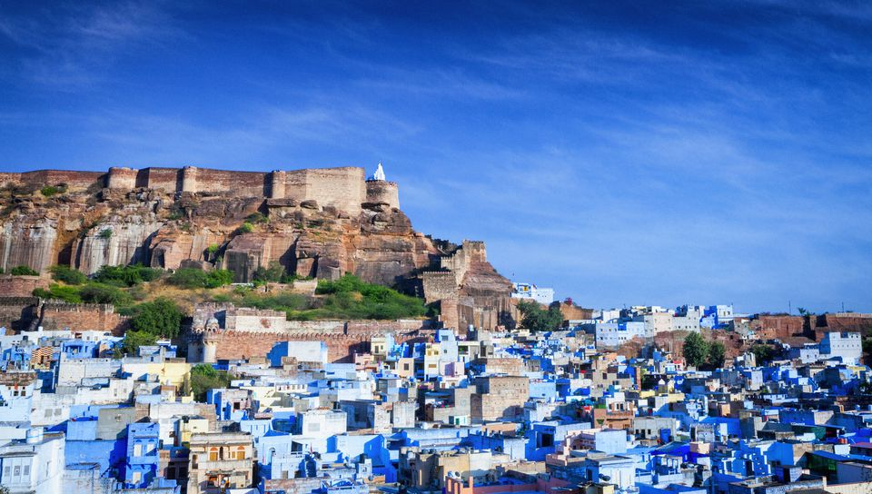
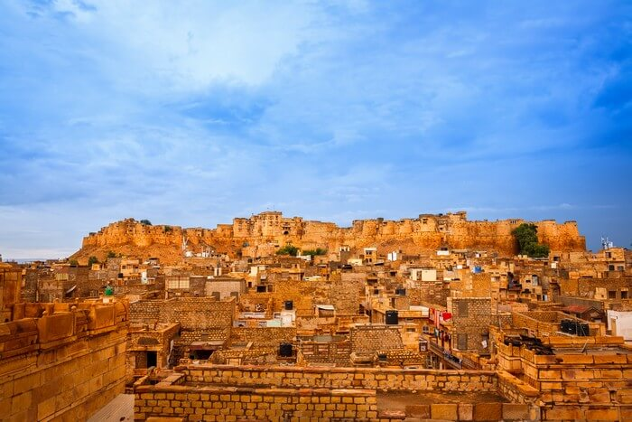

Welcome to Rajasthan, Rajasthan literally, "Land of Kings") is India's largest state by area (342,239 square kilometres (132,139 sq mi) or 10.4% of India's total area). It is located on the northwestern side of the India, where it comprises most of the wide and inhospitable Thar Desert (also known as the "Rajasthan Desert" and "Great Indian Desert") and shares a border with the Pakistani provinces of Punjab to the northwest and Sindh to the west, along the Sutlej-Indus river valley. Elsewhere it is bordered by five other Indian states: Punjab to the north; Haryana and Uttar Pradesh to the northeast; Madhya Pradesh to the southeast; and Gujarat to the southwest. Major features include the ruins of the Indus Valley Civilisation at Kalibanga; the Dilwara Temples, a Jain pilgrimage site at Rajasthan's only hill station, Mount Abu, in the ancient Aravalli mountain range; and, in eastern Rajasthan, the Keoladeo National Park near Bharatpur, a World Heritage Site known for its bird life. Rajasthan is also home to three national tiger reserves, the Ranthambore National Park in Sawai Madhopur, Sariska Tiger Reserve in Alwar and Mukundra Hill Tiger Reserve in Kota.

Tours to Jodhpur
Jodhpur is the second largest city in the Indian state of Rajasthan and officially the second metropolitan city of the state. It was formerly the seat of a princely state of the same name. The capital of the kingdom was known as Marwar. Jodhpur is a popular tourist destination, featuring many palaces, forts and temples, set in the stark landscape of the Thar Desert. The city is known as the "Sun City" for the bright and sunny weather it enjoys all the year round. The old city circles the fort and is bounded by a wall with several gates. Jodhpur is also known as the "Blue City" because of the blue colours that decorate many of the houses in the old city area.However, the city has expanded greatly outside the wall over the past several decades. Jodhpur lies near the geographic centre of the Rajasthan state, which makes it a convenient base for travel in a region much frequented by tourists.
Tours to Jaisalmer
Pahalgam is a town and a notified area committee in Anantnag district of the Indian state of Jammu & Kashmir. It is a popular tourist destination and hill station.It is located 45 kilometres (28 mi) from Anantnag on the banks of Lidder River at an altitude of 7,200 feet (2,200 m). Pahalgam is the headquarters of one of the five tehsils of Anantnag district. Pahalgam is associated with the annual Amarath Yatra. Chandanwari, located 16 kilometres (9.9 mi) from Pahalgam is the starting point of the yatra that takes place every year in the months of July–August.
Tours to Jaipur

Gulmarg is a town, a hill station, a popular skiing destination and a notified area committee in the Baramula district of the Indian state of Jammu and Kashmir.The town is situated in the Pirpanjal range in the western Himalayas. Originally named Gaurimarg ("the fair one") by shepherds in honor of the Hindu goddess Parvati, the resort was renamed Gulmarg(“meadow of flowers”) by Sultan Yusuf Shah of the Chak Dynasty who frequented the place with his queen Habba khatoon in the 16th century.Wild flowers of 21 different varieties were collected by the Mughal emperor Jahangir for his gardens in Gulmarg. In the 19th century, British civil servants started using Gulmarg as a retreat to escape summers in North Indian plains. Hunting and golfing were their favorite pastime and three golf courses were established in Gulmarg including one exclusively for women.One of the golf courses survives and at an altitude of 2,650 metres (8,690 ft) is the world's highest golf course.In 1927, British established a ski club in Gulmarg and two annual ski events were hosted one each during Christmas and Easter.Central Asian explorer Aurel Stein also visited Gulmarg during this period.